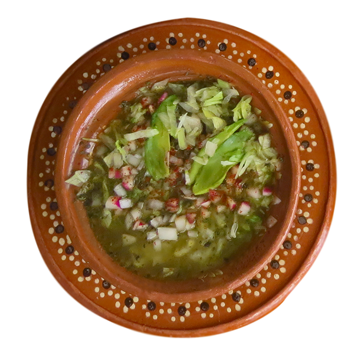

Pozole Verde

Description
Pozole Verde is a Mexican soup that is just perfect for the fall and winter. Pozole uses a combination of ingredients such as
tomatillos, chilies, chicken, hominy, ect. Pozole can come in many ways but the two traditional ways for making pozole is
red or green. The Pozole in general is a dish that is often cooked during times of celebration for instence; Christmas,
New Years, or even parties.The reason for this is because pozole is often cooked in large batches that is ment to be shared with family and friends.
Ingredients
- 1 can of hominy (108 oz)
- 1 whole chicken
- 2 garlic heads +4 garlic cloves, divided
- 2 Tbsp salt
- 2 pounds of tomatillos
- 2 1/2 medium white onions, divided
- 1-3 Serrano peppers (stems removed)
- 2 bunches of cilantro
- Up to 2 cups of water
- 1 iceberg lettuce head
- 1 bunch radishes
- Dry Mexican oregano leaves
- 1-2 pack of tostadas
Steps
- Open the can of hominy and rinse well in a colander until the water is clear.
- Place the hominy in your largest pot
- Clean and cut the chicken into 4 pieces and place it all in the pot with the hominy.
- Take the two garlic heads whole, rinse them and throw them in the pot
- Lastly, put water in the pot until it covers everything
- Bring it to boil and then lower the temperature to medium and let it simmer for 45-55 minutes or until the chicken is cooked.
- Take the chicken out of the water and let it cool
- Remove garlic heads from the water
- In a blender, mix well the 4 cloves of peeled garlic, half an onion, two pounds of tomatillos (peeled and wash), serrano chiles,
cilantro, salt and pepitas. Add up to two cups of water in order to blend smoothly.
- Add the salsa to the soup pot with the hominy and let it simmer for 15-20 minutes
on low heat until the salsa changes in color from bright green to olive green.
- Taste for salt. The soup is ready to serve.
- While the broth is simmering with the salsa, shred the cooked chicken by hand.
- At this point, you have two options, either add the shredded chicken straight to the pot or keep the chicken separate and add
a little bit to each bowl as you serve
- Wash the lettuce and finely chop. Wash and finely slice the radishes and chop the remaining onions.
- Serve the soup in a traditional ceramic pozole dish, or a bowl, adding some shredded chicken, lettuce, radishes,
chopped onion, a pinch of dry oregano.
- Accompany with tostadas
- Now it's time to eat.